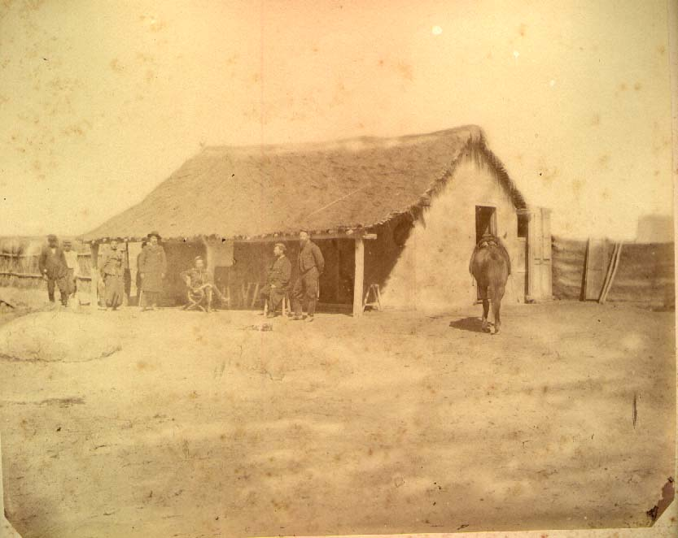
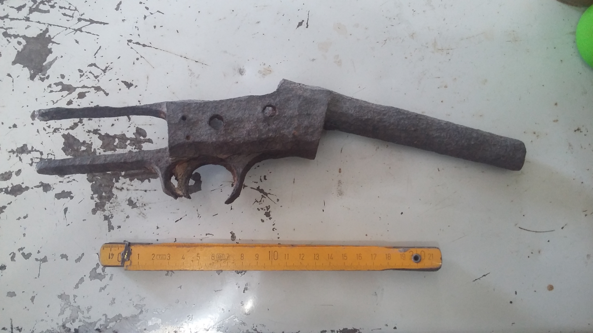
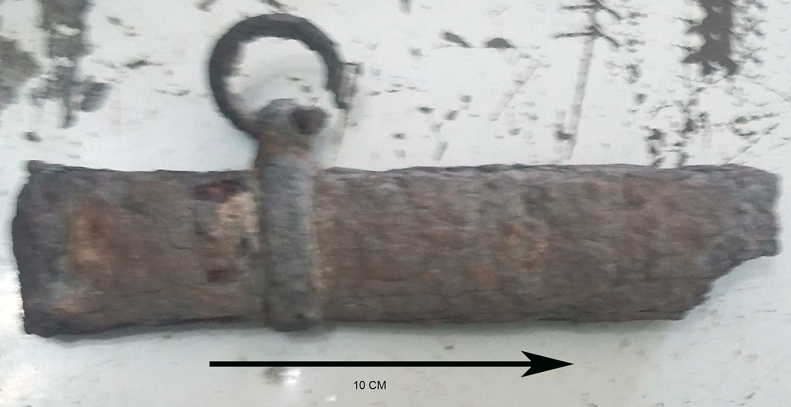

Cronología: ca. 1880–1900 Material: vidrio Procedencia: Pampa de los Molinos Colección: Museo de Historia Regional de Choele Choel



Descripción
Frasco cuadrangular de vidrio moldeado con cuello corto y boca circular.
Probablemente asociado al uso de tinta para escritura en contextos domésticos
o administrativos de fines del siglo XIX.